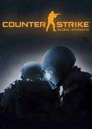

Counter Strike
Action & Massively multiplayer game
Counter-Strike: Global Offensive (CS: GO) expands upon the team-based action gameplay that it
pioneered when it was launched 19 years ago. CS: GO features new maps, characters, weapons, and
game modes, and delivers updated versions of the classic CS content (de_dust2, etc.).
"Counter-Strike
took the gaming industry by surprise when the unlikely MOD became the most played online PC action game
in the world almost immediately after its release in August 1999," said Doug Lombardi at Valve.
"For the past 12 years, it has continued to be one of the most-played games in the world, headline
competitive gaming tournaments and selling over 25 million units worldwide across the franchise.
CS: GO promises to expand on CS' award-winning gameplay and deliver it to gamers on the PC as well as the
next gen consoles and the Mac."